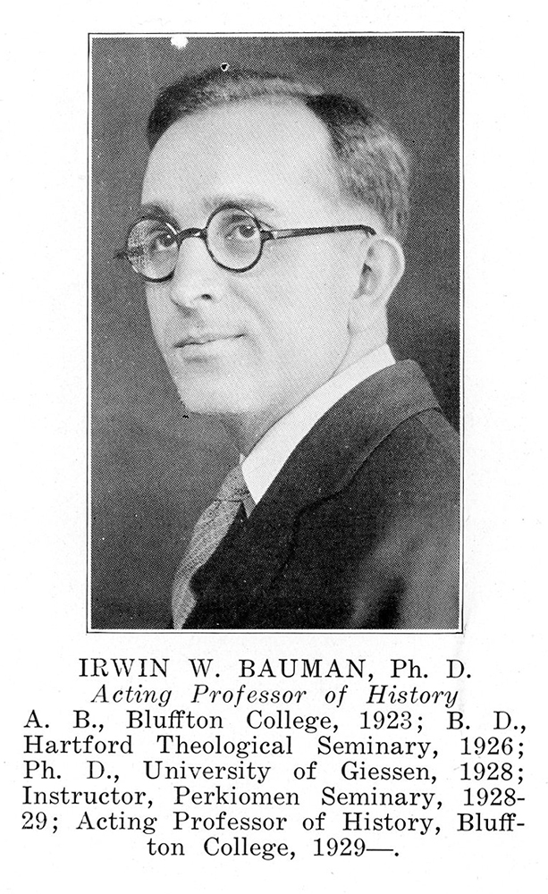

Back in Pennsylvania
Back in the U.S. again, in 1929, Irwin and Mary stayed in Irwin's parent's home in Sassamansville, PA, for awhile. They helped with the applebutter cooking that fall.
In the fall, Irwin was called to take a teaching position at Perkiomen School in Pennsylvania, the high school from which he had graduated. The Baumans lived in Pennsburg in a small room in a dormatory there which had a kitchen and dining room in the basement. Across the hall lived two other faculty members who became close friends, one of whom took Mary to the hospital when the baby was born since the Baumans had no car at that time. Mary Kathryn was born on 1929 April 3 in Pottstown.
The Baumans enjoyed their time there. They went out walking together a lot. Mary recalled later that the outdoors made her feel too invigorated at times, so that Irwin had to restrain her a few times while she was pregnant, such as when she was tempted to jump across bars in a fence.
In the spring after school was closed the Baumans returned to Sassamansville. Before long there was a phone call from Dr. Mosiman from Bluffton College asking Irwin to teach history at the college in Dr. C. Henry Smith's place, since Dr. Smith was going on a one year sabatical. They agreed and moved to Bluffton, Ohio.
Even though they lived in Ohio, the Baumans visited family in Pennsylvania for a week each summer until World War II began.
Bluffton, Ohio
At first the Baumans rented an upstairs apartment on Main Street. Later they moved into an apartment in Dr. Biedermann's house. Dr. Biedermann was a medical doctor and was one of the first female physicians from Bluffton. Mary Kathryn was very fond of Dr. Biedermann. Once when she was around 3 years old she wandered over to Dr. Biedermann's side of the house when the doctor was dressing in the bathroom. When spotted Mary Katherine said "I was looking up at the ceiling". Mary Kathryn liked playing outside in the back yard with Dr. Biedermann's big, furry, friendly dog.
Another time recalled by her mother was when Mary Kathryn was running, wanting to get into Dr. Biedermann's car while the doctor was backing out of the garage. A girl across the street ran and grabbed her out of the way of the car. Years later, Mary K. worked during one summer high school vacation cooking and keeping house for Dr. Biederman after she had moved to Jenera.
Their second child, John Howard, was born in the early 1930s and was delivered by Dr. Biedermann. The hospital was in an ordinary residential house on Main Street at that time.
Irwin continued to teach various courses at Bluffton College after Dr. Smith returned. It is said that while he was there he taught about 55 different courses, including history, anthropology, economics, and sociology. Irwin taught at Bluffton College from about 1930 to 1966.
The Biedermann home had orignally been part of the Fort Wayne Bible School. There was a small run down house across the back yard that had served as a dormatory for the girls of the school. Irwin and Mary bought this house from the doctor, which began an extensive and long process of remodeling work for Irwin. First he raised the building by one cement block and, with some help from 2 students, dug a bigger basement. By fall a furnace was installed so that they would have heat in the house. When they first moved in, there was no indoor plumbing and they had to use an outhouse until Irwin installed a bathroom. He also built a couple new rooms as well as a screened in porch, and competely turned the stairway around. It was his first time to plaster ceilings, and although the ceiling kept falling down he refused to give up until it got done. He began to wonder whether the job would ever get done when Mary would come up with new suggestions. Although it was recreation for him to do remodeling work, Irwin had to work very hard to do this as well as keep up with his studies and teaching at the college. Later when he got some wood working tools he enjoyed making some things from wood (such as checker boards and chess pieces).
During the depression the college could not pay the regular salary to its professors. The Baumans had three students living with them at different times. They received the tuition that these students had to pay, and in return the students got board and room. They enjoyed the friendships made through this arrangement. Irwin also worked one summer at a Ford factory in Detroit as a sort of tool and die apprentice. At the end of the summer his family met him there and toured the River Rouge plant.
In the 1940s Irwin was the pastor of a community church in New Stark, Ohio while he continued to teach at the college.
During World War II the Baumans bought CPS (Civilian Public Service) relief stamps instead of war bonds. These relief stamps were something that Mennonites could buy to be doing something useful for the country without supporting the war. Mary K. spent her babysitting money on relief stamps. There were enough Mennonite students at school that Mennonite kids weren't harrassed by other students about the C.O. (concientious objector) issue.
Children
Children took IQ exams before starting school, and due to Mary K.'s exam results it was suggested that she start school a year earlier than usual, at 5 years of age. The summer before she started school she became very ill. Her parents remember that she became cranky, so her father took her swimming in an attempt to cheer her up. Right after this she came down with red measles and double pneumonia. She recovered in time to begin first grade in the fall. However, early in the school year she got sick again. The doctors thought she had tuberculosis, so she could not go to school and instead spent most of the year in bed. Finally her parents took her to a pediatrician who told them that Mary K. certainly did not have T.B.; the lung scar tissue other doctors had noticed was not from T.B. but rather from her earlier pneumonia, and her only problem was that she needed to have her tonsils removed. With that problem solved she was able to begin first grade again the next year. Later in life she felt it was best that she started school at the normal age because she would probably have been too immmature to begin a year earlier.
Mary K. remembered that in grade school days it was a lot of fun to roller skate to school when it was nice weather.
When Mary Kathryn was about 5 years old the Baumans bought a second hand piano, and she began to take piano lessons from Mrs. Pearl Bogart Mann, the pianist in the Bluffton College music department. There was one girl at school who gave Mary K. chocolates if she would play piano during recess. She took to the piano naturally, but Mary K. didn't become really serious about piano until she was in junior high, at which point she became very excited about it and practiced 2 hours a day. In 9th grade she played a piece on the amateur hour radio program. Although piano was her main instrument, she also enjoyed playing violin. In fourth grade when students could join the string program at school she wanted to play violin, but her parents thought piano was enough for her. However, Mary K. borrowed a violin during the summer and taught herself to play. Her parents were impressed and so let her take 6 private lessons before the school year started so that she could catch up with the other students in the string program. Although she did not take private violin lessons thereafter, she was always the concert mistress of the school orchestra.
Although music was always Mary K.'s big interest, she excelled academically, and she was also very interested in art and did pencil and pen and ink work during her high school years.
Her brother John was very involved in athletics such as football and basketball during his school years. He also played cello and trombone and had the lead role in some school operettas.
Both Mary Kathryn and John attended Bluffton College after graduating from high school. Mary K. majored in music education. John majored in science and continued on to medical school to become a doctor. Later, he and his first wife Ruth (Gilliam) went to India for two three-year terms, separated by residency, at a large medical center and medical college, Christian Medical College and Hospital in Vellore. John's interest in electronics as a youth prepared him for research at an affiliated leprosy hospital about 5 miles away. He developed special shoes to prevent injuries to pressure on the feet of the affected patients.
{kind=link}
Later life
Irwin survived a major heart attack in the summer of 1952 and he had occasional heart problems after that. In the early 1960s, the Baumans bought an old hearse. Irwin built shelves in the back, and they used the vehicle for camping trips.
Irwin had a "sweet tooth" while Mary was "health food" minded before the term had been invented. Thus from their grandfather the grandchildren received icecream cones and candy, and from their grandmother they received fruit and garden grown vegetables of all kinds; and, in addition, they were treated to story telling about incidents from their grandparents' lives.
Later in life Irwin's memory began to fail him. In 1984 the Baumans moved into the Mennonite Memorial Home in Bluffton. On 1986 July 22 Irwin died of congestive heart failure.
For years, Mary listened on the radio to the Spanish lesson from Ohio State University each morning. She retained her memory and sense of humor into her nineties. She passed away on 1990 October 25.
If you look for Irwin and Mary's graves, you won't find them. Both chose to donate their bodies to be used for study by medical students at the Medical College of Ohio in Toledo. Their ashes were spread on the Bluffton University campus which had been such a big part of their lives.